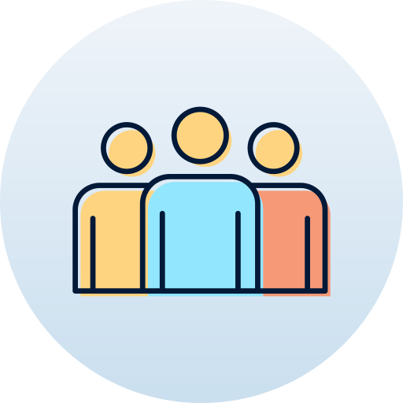

My educations

Vanderbilt University
August 2020 - May 2024
Economics and History, Computer Science (GPA: 4.0/4.0)
Honors and Awards: Dean’s List for 3 semesters, Vanderbilt Virtual Innovation Challenge 2nd Place
Relevant Coursework: Intermediate Software Design, Data Structures, Digital Systems, Discrete Math, Programming and Problem Solving in Java, Linear Algebra, Multivariable Calculus, Econometrics
On-Campus Involvements: Student Consulting for Nonprofit Organizations, Women in Computing, Girls Who Code, Programmers of Game, Global China Connections
Stanford University
July 2019 - August 2019
Stanford Summer Humanities Institute
During the summer of 2019, I quested into the art of living and explored the relationship between technology and human happiness with Professor Kenneth Taylor and a cohort of 20 other high school students
My Skills

|
|
My professional experience

Vanderbilt University Owen School of Management
December 2021 – Present
Data Researcher
• Categorize product types and construct daily metrics for the number of competitor products and the mean of all variables over 200,000+ data entries with SQL
• Investigated 10+ articles on Supplier Selection and Management and wrote a 5-page literature review and synopsis
RedFern Digital
June 2021 – September 2021
Research Analyst Intern
• Cleansed, analyzed, and visualized 500+ e-commerce data entries to investigate sales trends with Excel
• Analyzed Chinese imported spirits, health supplements, niche fashion market landscapes and consumer behaviors by conducting desktop research and in-depth interviews with 13+ experts and KOLs
• Developed China market entry strategies for 3 international consumer brands and created 180-page slide decks
Student Consulting for Non-Profit Organizations
September 2020 – Present
Project Manager
• Spearhead a group of 5 to expand Next Steps’ sponsorship revenue by 20% by managing the semester-long project timeline, creating a 10-page pitch deck and sponsorship package
Senior Consultant
• Analyze Urban Green Lab’s 3000+ small-donor contribution data points with Excel and create a tiering system based on development plan to achieve 15% annual growth rate
Student Consultant
• Collected and analyzed 100+ data entries of Nashville population and environmental policy and created a 10-page negotiation material and 30-page SOP for implementation plans and measurements
My leadership experiences
Emerge 2022: Into the Metaverse, Women in Computing
December 2021 – Present
Director of Sponsorship
• Lead a group of 2 to research companies, reach out to 20+ recruiting representatives, and track correspondence
• Initiated and collaborated with the Design team to develop a customized, clear, and appealing sponsorship package flyer to acquire 6 sponsors
SheShapes
June 2021 – December 2021
Project Planning Chair
• Constructed the 3-month project timeline, planned and tracked the individual action items for a group of 20
• Collected questionnaires from 300+ applicants and analyzed their response data and scores with excel
• Designed the engagement strategies and feedback mechanisms to increase fellows’ engagement by 25%
Vanderbilt University Chinese Students & Scholars Association
September 2021 – Present
Finance Chair
• Formulate fiscal year’s budget plans and manage bank accounts of $9000+ and 56000+ yuan to ensure sufficient cash flow for large-scale events
• Purchase supplies and merchandises of $3000+ for 3 campus-wide events with 300+ participants in total
Get In Touch
If you are interested in knowing more about my experience in Project Management, Data Analytics, or Female Right Advocate, please don't hesitate to reach out to me via xiaohan.liu.1@vanderbilt.edu!
CONTACT ME